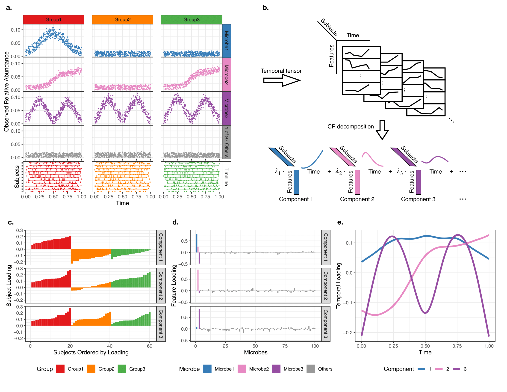

TEMPoral TEnsor Decomposition (TEMPTED)
- R package installation and tutorial
- Python plugin installation
- Please cite: Shi, P. et al. (2024): Time-Informed Dimensionality Reduction for Longitudinal Microbiome Studies. Genome Biology, 25 (1), 317

MUlti-Sample Trajectory-Assisted Reduction of Dimensions (MUSTARD)
- R package installation and tutorial
- Please cite: Zhuang, H., Gai, X., Zhang, A. R., Ji, Z., Shi, P. (2026): Trajectory-guided dimension reduction for multi-sample single-cell RNA-seq data reveals sample-level heterogeneity.
Bioinformatics.